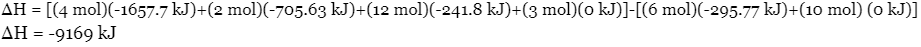

There are two main applications to solid propellants: military uses and space exploration. Within military uses, solid propellants are used to propel air-to-air missiles, such as AIM-9 Sidewinder, ballistic missiles, such as Jericho and Sejjil, and ICBMs, including LGM-30 Minuteman, UGM-133 Trident II, LGM-118 Peacekeeper, RT-2PM Topol, DF-41, and M51 SLBM. When solid propellants are used for space shuttles and orbital rockets, they are often used as strap-on boosters to increase the payload capacity of the rockets or spin stabilizers when a high velocity is required. Solid rockets are also often used as initial stage propellant machines, final boosters for satellites, or light-launch vehicles for low Earth orbit (LEO) payloads (altitude of less than less than 1000 km) under 2 tons or escape payloads (altitudes of more than 1000 km) of up to 500 kg.

Solid propellants were first developed in the 13th century under the Chinese Song dynasty and used as gunpowder. The earliest record of its uses was found in the 14th century, where gunpowder was used for launching “fire arrows” to drive back the Mongols during the Mongol siege of Kaifeng. Each “fire arrow” consisted of a propellant tube (open one end and closed the other end) and was filled with gunpowder. Gas from the gunpowder’s combustion was allowed to escape, which propelled a long arrow attached to the propellant tube forward.

In the 1750s, the first cast iron rocket was used by the Kingdom of Mysore to defeat the British Empire during the Second Anglo-Mysore War. The rockets were extremely effective as they were able to reach targets as far as 1.5 miles away. After seeing the effectiveness of such weapons, many European countries, including England, France, and Ireland, began researching propellant rockets.

Modern solid rocket motors were invented by American aerospace engineers Jack Parsons at Caltech in 1942, where he placed double-base propellant with roofing materials made of asphalt and potassium perchlorate, and created slow-burning rocket motors. In the 1950s and 1960s and with the help of many other US researchers, ammonium perchlorate composite propellant (APCP), which is one of the most common type modern-day solid propellants, was developed. It is also worth mentioning here that APCP is still used for many applications, including space exploration applications, such as NASA’s Mars Exploration Rover. By the 1970s, solid fuels also began its deployment into military uses such as in propelling ICBMs.
Over the course of history, solid fuels have developed into many forms for several different purposes. This section will cover gunpowder propellants, amateur propellants (which are solid propellants used for hobbyists), homogeneous propellants, and heterogeneous propellants. It is also worth noting here that each type of propellant must include a fuel and an oxidizer, but may also contain binders, catalysts, and plasticizers. The use of each ingredient is listed:
Black powder propellants, also known as gunpowder, is composed of charcoal (fuel), potassium nitrite (oxidizer), and sulfur (fuel + catalyst). Though we are most familiar with gunpowder’s uses in guns, it is also used in low-power model rockets, such as Estes & Quest rockets. Gunpowder is often preferred over other types of solid propellants due to their cheap price and ease to produce.


The two types of amature propellants, which are propellants for rocket model hobbyists rather than for professional uses, that will be covered in this section are Zinc-Sulfur (ZS) propellants and “Candy” propellants. ZS propellants are composed of powered zinc metal (fuel) and powered sulfur (oxidizer) and have a fast linear burn rate (at 2 m/s). However, it is not an effective propellant since most of the fuel will burn outside the combustion chamber of a rocket. “Candy” propellants, on the other hand, is composed of a sugar chemical, usually dextrose, sorbitol, or sucrose (fuel) and potassium nitrate (oxidizer). The contents are then melted together and the amorphous colloid is packed into a mold and made ready for combustion. Much like ZS propellants, “candy” propellants also only generate a low-medium specific impulse, making both of these propellants the perfect option for amateurs and rocket enthusiasts.
In homogeneous solid propellants, the ingredients are linked chemically and results in a homogenous physical structure. The three main types of homogeneous propellants are single base (NC and additives), double base (NC, NG, and additives), and triple base propellants (NC, NG, NQ, and additives). In single-base propellants, the main ingredient and chief explosive is nitrocellulose (NC) that is gelatinized with ethyl alcohol as solvent. Small amounts of chemical stabilizers used to control the chemical stability, suppress flames, and enhance the propellant’s properties are also added. The propellant grain is then coated with carbon black to keep the surface smooth. In double-base propellants (also one of the oldest propellants), the main ingredients are NC and an energetic nitrate ester such as nitroglycerin (NG). Typically, out of the two monopropellant fuels, one acts as the unstable, high energy propellant and the other as the lower energy, stabilizing propellant. Double-base propellants are able to reach a medium-high performance of Isp ~ 235; however, with the addition of metal fuels, such as aluminium, the performance will be increased to Isp ~250. In triple-base propellants, upon the bases of double-base propellants, nitroguanidine (NQ) is also added. NQ contains a relatively high amount of hydrogen atoms with its molecular structure that lowers the average molecular weight of the propellant combustion products. Instead of NQ, crystalline ammonium perchlorate (AP) may also be used.
Heterogeneous propellants, which are mixtures of crystalline oxidizer particles binded with a polymeric fuel matrix, typically have high concentrations of oxidizers and are used to give high specific impulse. The most commonly used solid oxidizers include ammonium nitrite composite propellant (ANCP) and ammonium perchlorate composite propellant (APCP). While ANCP uses either magnesium or aluminium as fuel and delivers medium performance (Isp~210), APCP uses aluminum fuel and delivers a high performance (Isp ~ 300). Other types of oxidizers include ammonium nitrate, ammonium dinitramide, and potassium nitrate. APCP is often found in many industrial and professional uses due to its high performance, moderate ease of manufacturing, and moderate cost. It is composed of 70% finely grounded oxidizer, 15-20% fine aluminium powder (fuel), and 10-15% polybutadiene acrylonitrile (PBAN) or Hydroxyl-terminated polybutadiene (HTPB) as the chemical that holds the above together. It is worth mentioning here that aluminium is often used as optimal fuel because it has a reasonable specific energy density, high volumetric energy density, and is difficult to ignite by accident.

Homogeneous solid fuels come in two varieties - simple base, and double base. Simple base fuels consist of only one compound - typically nitrocellulose - while double base fuels consist of two - typically nitrocellulose and nitroglycerin. These propellants usually have fairly low specific impulses, and are usually only used for simple tasks, such as to jettison spent parts and for staging.
Composite propellants are commonly used in modern day rocketry. They are heterogeneous, and consist of a mixture of fuel, oxidizer, and other binding agents. The most common combination involves the use of aluminum as a fuel, and ammonium perchlorate as an oxidizer. This combination is often referred to as Ammonium Perchlorate Composite Propellant (APCP). Polybutadiene acrylic acid acrylonitrile (PBAN) or hydroxyl-terminated polybutadiene (HTPB) are two common binding polymers that are added to form the solid propellant - they are consumed as fuel when the propellant burns. Various catalysts may also be added. The final product typically has the consistency of a rubber eraser.
Since the primary reaction in most solid motors involves the combustion of aluminum and ammonium perchlorate, we will take a look at the reaction involved:
Based on standard enthalpies of formation and Hess’s Law:
This is a highly exothermic reaction!
Keep in mind that these calculated values are based on ΔHof values - the actual values at the pressures and temperatures within a rocket booster may vary.
The combustion of aluminum and ammonium perchlorate produces aluminum oxide, aluminum chloride, water vapor, and nitrogen gas - the reaction is highly exothermic, and the heat released causes the gases to expand and provide thrust.
It is worth noting, however, that the fuel and oxidizer present are not necessarily mixed in stoichiometric amounts - this is to maximize the rate of flow of the produced fluids in order to maximize thrust.